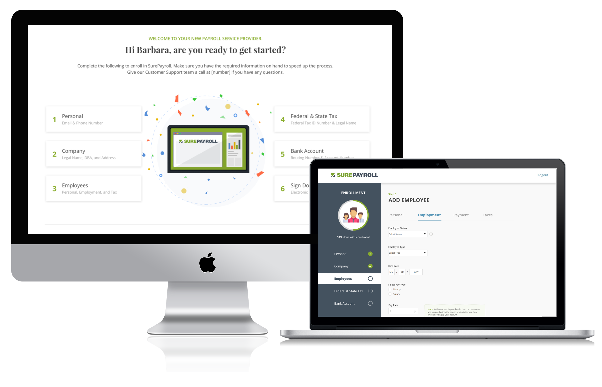
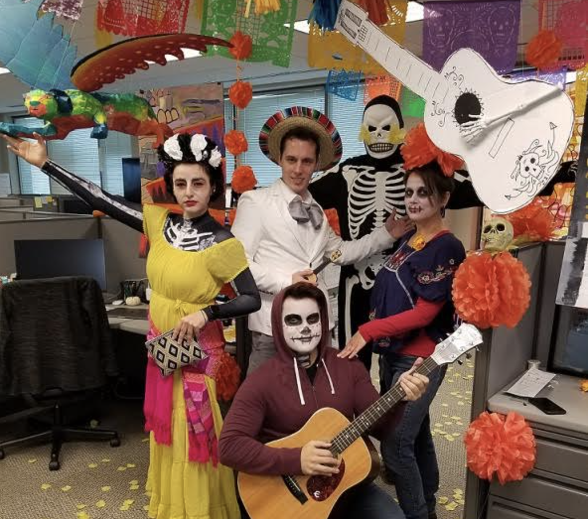
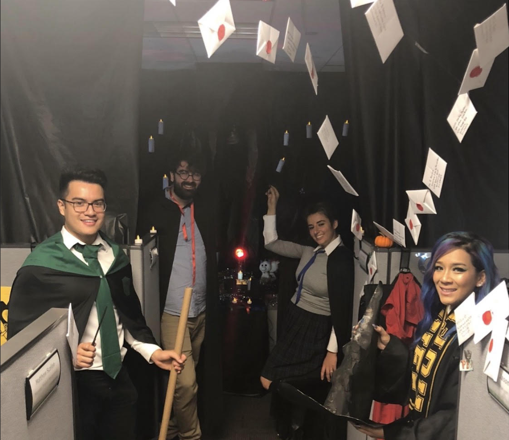

Surepayroll is a payroll company specializing in small businesses and providing a high touch service for small business owners such as HR and Legal resources. I was one of the two main designers on this project along with two developers, a product owner, and a product manager.
Problem
Our onboarding program for new clients takes an average of 21 days.
This process takes multiple touch points with our sales team and multiple exchanges of forms including tax, EIN, and employment forms. This results in a 30% drop off rate which results in missed sales and opportunities for serving our clients.
Project Goals
- Reduce user drop off during onboarding.
- Reduced sales team and customer service involvement.
- Increased lead conversion.
Discovery
We started this discovery process with ten user interviews to understand how our process is affecting the users we have. We also reached out to ten users that ended up dropping off from the sales onboarding process to uncover their reasons for not signing up with us. We wanted to get a holistic view of our experience to uncover pain points and provide solutions for our users.
I uncovered more information about the enrollment process from sales and customer service to understand the painpoints in the lengthy process.
Final Design:
We decided that a best approach broke down the process into digestable chunks which allows the user to leave the experience and come back whenever they want to.
Features
- Contact button that's always there so the users feel supported.
- Status navigation that allows users to see where they, explore other pages, and see what to expect and how to prepare.
- Information bubbles along the way so that users know what to do.
Results
- We reduced onboarding drop off by 40% compared to the manual sales process.
- Reduced sales involvement by 35%.
- Increased conversion from prospect to client by 47%.
Working at SurePayroll helped me enhance my design skills and I was able to gain experience in mentoring which I found very rewarding.
My team was very competitive with our office halloween costume and wanted to share it here. It was such a fun way to explore our creativity.
Coco Inspired
Harry Potter Inspired
